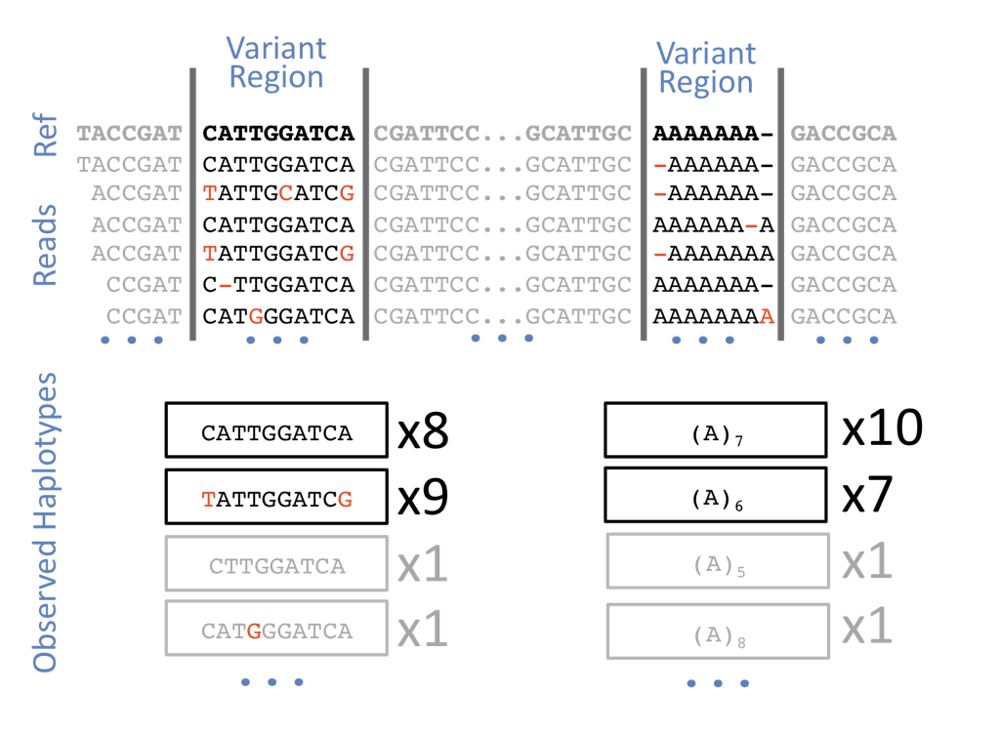
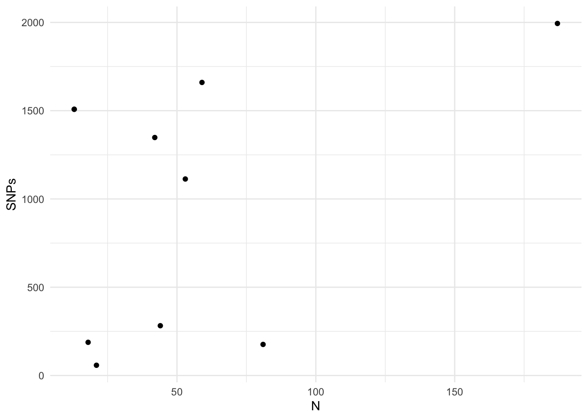

library( tidyverse )
library( ggrepel )
theme_set( theme_minimal() )
As a first pass through the data, I split individual sequences into different groups to run bwa. This works on an individual-by-individual basis and with 5% of each individuals genome takes roughly 30 minutes per individual (*1419 individuals …). Doing it in smaller groups allows me to run multiple instances at the same time. See the table here for the groups and current status. At the time of this writing, this process is still waiting on the final 6 groups of samples to be processed.
For a subset of the data, I did call SNPs at the same time that

Batching freebayes
To batch these I made a new directory called snpcalling and linked the bam files from a set of indiviudals in several different populations to this folder.
for bam in ../samples/O/*.bam; do
ln -s $bam;
doneI then made a small runFreeBayes.sh run file that would
#!/bin/bash
ref="../samples/all005/reference.fasta"
ls *.bam > bam.fofn
freebayes --fasta-reference ${ref} --bam-list bam.fofn --vcf Output.vcfI then made it executable
chmod +x runFreeBayes.shAnd made a slurm batch file freebayes.sub which contains
#!/bin/bash
#SBATCH -N 1
#SBATCH -n 36
#SBATCH -t 96:00:00
#SBATCH -J freebayesbaby
#SBATCH -o freebayes.o%j
#SBATCH -e freebayes.e%j
#SBATCH --mail-user=rjdyer@vcu.edu
#SBATCH --mail-type=ALL
ulimit -s unlimited
./runFreeBayes.sh
scontrol show job $SLURM_JOB_IDand then dumped it off for batch processing
sbatch freebayes.subAfter this, you can see that the batch job has been queued up (#34827) and waiting to go.
[rjdyer@huff snpcalling]$ squeue
JOBID PARTITION NAME USER ST TIME NODES NODELIST(REASON)
34827 basic freebaye rjdyer PD 0:00 1 (Priority)So, now lets see if it actually works.